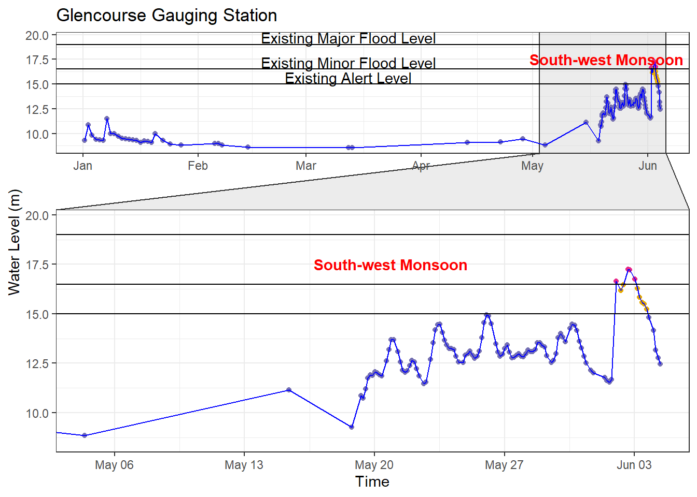
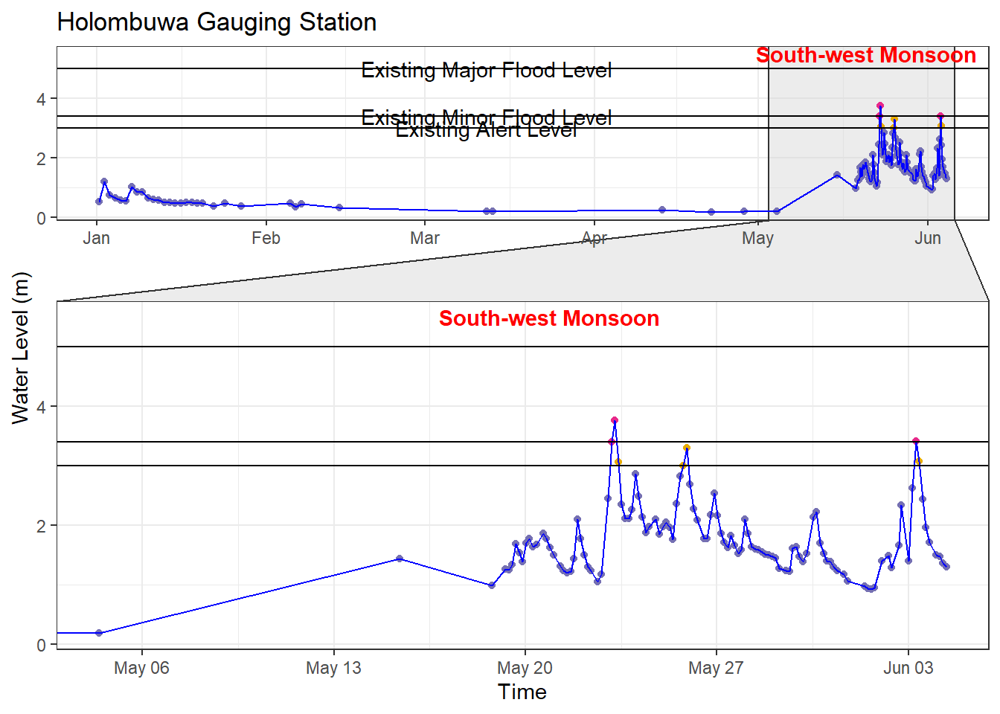
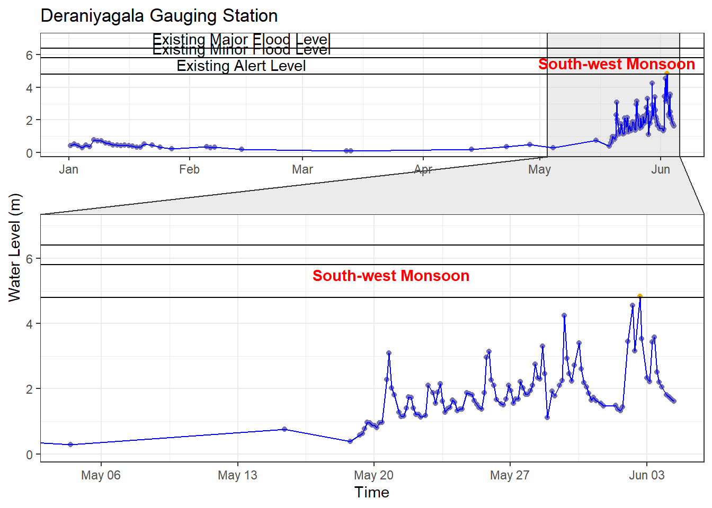
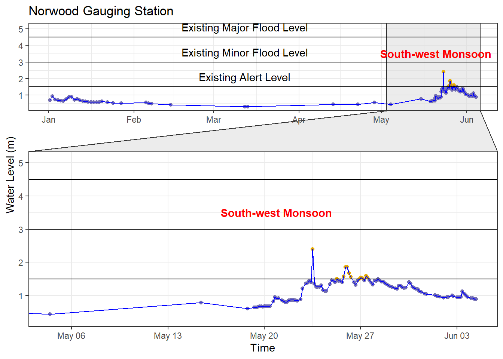

Beyond the Floodgates: Rethinking Alert Thresholds for Effective Flood Warning Systems
In recent days, Sri Lanka has experienced severe floods, worsened by the arrival of the southwestern monsoon season. This seasonal weather pattern, which occurs between May and September, brings heavy rainfall to the southwest regions of the country. Consequently, adverse weather conditions have caused widespread damage across multiple areas, disrupting lives and resulting in significant losses. While natural disasters can be unpredictable, effective early warning systems play a crucial role in mitigating their impact
Living in Kelaniya, I faced disruptions in my daily routine because of the sudden flood situation. Traffic jams, road closures, and other challenges led me to conduct a preliminary analysis to grasp the current situation better and assess its impact on the area.
This preliminary analysis was conducted on data from the Kelani River Basin, encompassing four tributaries: Kelani Ganga, Gurugoda Oya, Seethawaka Ganga, and Kehelgamu Oya. The data used for analysis was sourced from Sri Lanka’s Disaster Management Centre (DMC), comprising water level readings from six stations: N’Street, Hanwella, Glencourse, Kitulgala, Holombuwa, Deraniyagala, and Norwood, which monitor the aforementioned tributaries.
celyon package developed by Thiyanga S. Talagala, available at https://github.com/thiyangt/ceylonUpon closer examination of the data for the Kelani River Basin, it was evident that the existing thresholds for early flood warnings are set too high. This caused delays in alerting communities at risk, leading to floods happening “unexpectedly” and making the damage worse. As indicated by the following visual representations covering the seven stations, although the data suggests early warning signs through an increase in water level compared to the historical data, the existing alert thresholds are significantly higher than the observed data. Consequently, this discrepancy has resulted in a failure to issue timely alerts, despite the data clearly indicating an impending disaster.





To address this issue, it is important to revise these existing thresholds promptly. By lowering them from their current levels, we will be able to establish a more precise and proactive warning system. This will empower authorities to notify vulnerable populations earlier, giving them ample time to prepare and evacuate if necessary.
However, while the need to lower thresholds is evident, it’s vital to strike a balance to prevent the risk of false positives. Overly reducing the thresholds could result in unnecessary warnings, leading people to disregard alerts when genuine danger arises. Therefore, finding the optimal balance is essential to ensuring the effectiveness of the warning system while avoiding unnecessary false alarms.
Comprehensive analyses of historical flood patterns, rainfall data, and the topographical characteristics of the affected regions should be taken into consideration when revising the warning threshold. Collaborative efforts between meteorological agencies, disaster management authorities, data scientists, and relevant stakeholders are essential in establishing revised thresholds that reflect the current realities of climate change and its impact on weather patterns. Further, the existing warning thresholds may no longer be sufficient due to increased construction activities. Empowering local communities with the knowledge and resources to respond effectively to flood warnings can significantly reduce the loss of life and property during disasters. The media has a crucial role to play by making the general public aware of the early flood warning issue by disaster management and other responsible authorities promptly.
With the launch of our latest research initiative focused on broadening our coverage, we are committed to improving our understanding and management of flood risks in Sri Lanka by broadening our analytical scope and putting cutting-edge approaches into practice. Our shared goal is to build a community that is better prepared and resilient.